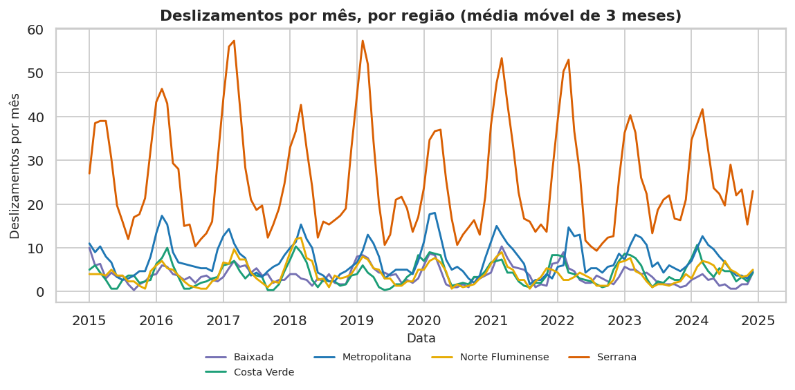
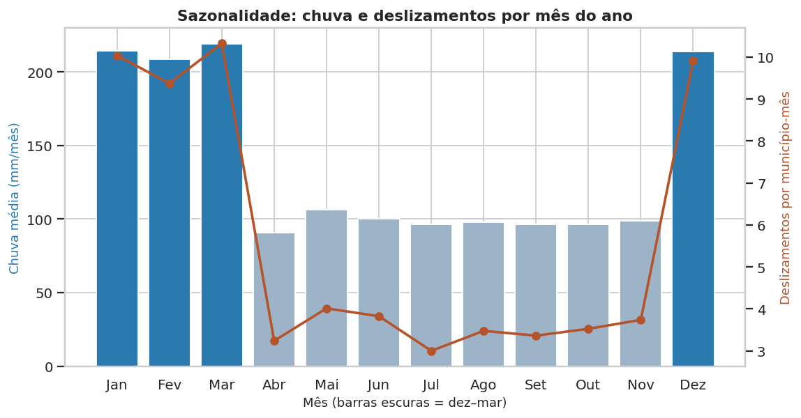
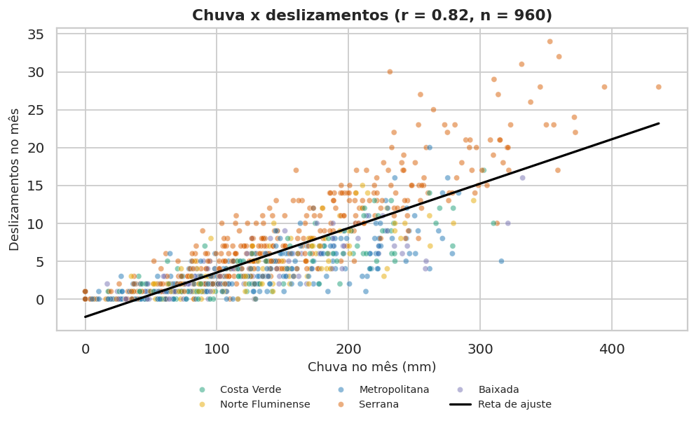
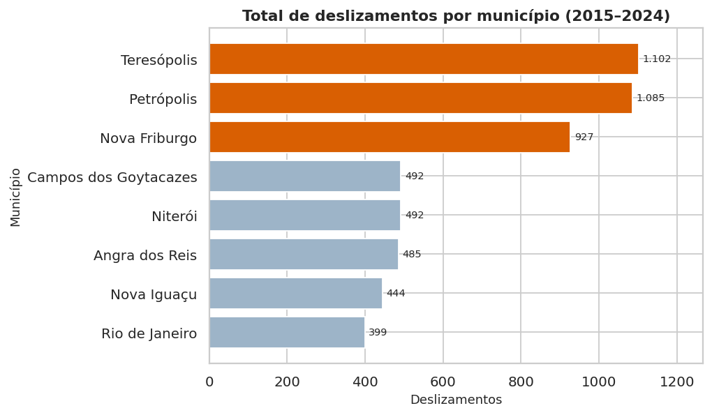
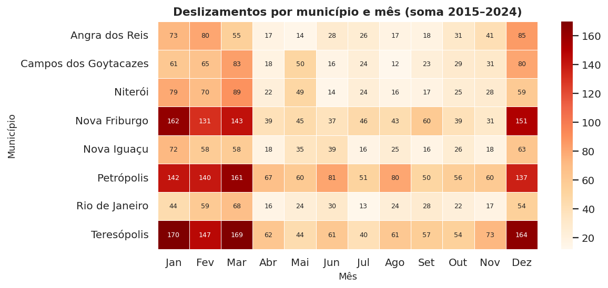
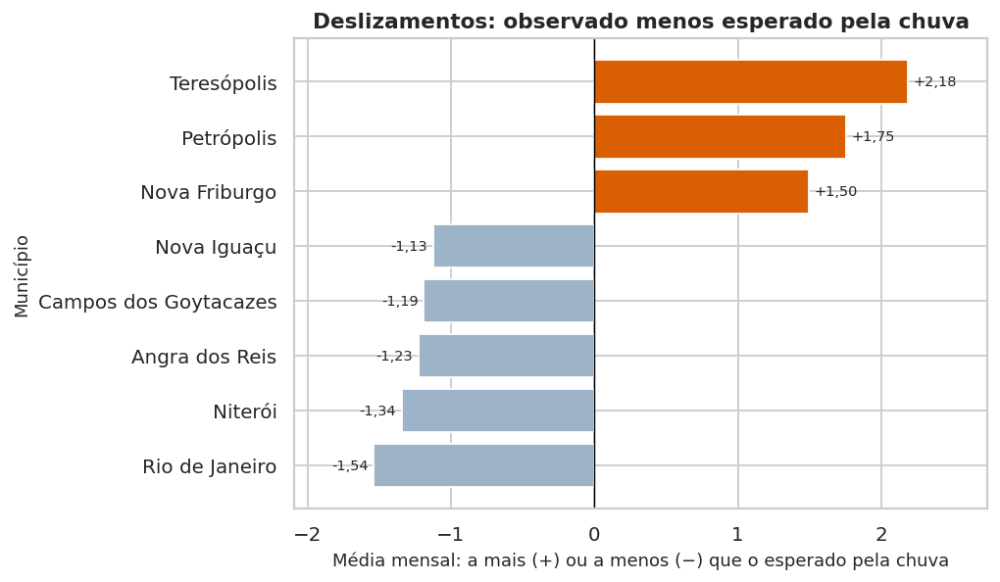

O problema
Chuvas intensas causam enchentes, alagamentos e deslizamentos de terra, principalmente em cidades serranas e áreas de encosta. O Estado do Rio de Janeiro tem um histórico recorrente de desastres desse tipo, com desalojados e óbitos. O projeto investiga:
- Quais municípios têm mais chuva e mais deslizamentos? Quais são os mais críticos?
- Há meses e períodos sazonais mais perigosos?
- A chuva intensa aumenta os deslizamentos? Há municípios fora do padrão?
Decisão apoiada: onde priorizar obras e defesa civil e quando operar em alerta.
A base de dados
simulacao_chuvas_deslizamentos_rj.csv: 960 linhas × 14 colunas, 8 municípios × 120 meses (janeiro/2015 a dezembro/2024), em 5 regiões do estado. São dados simulados fornecidos pelo professor (repositório Dados-Simulados-G2).
populacao muda a cada mês no mesmo município (de ~120 mil a ~6,5 milhões), por isso não foram calculadas taxas por habitante; desalojados é quase proporcional aos deslizamentos; e nivel_risco não é função exata da chuva.Indicadores-chave
Principais visualizações






Resultados e conclusão executiva
- A chuva é o principal gatilho: r = 0,82 e cerca de +5,9 deslizamentos a cada 100 mm; efeito imediato (r = 0,95 no mesmo mês e 0,50 com 1 mês de defasagem).
- Forte sazonalidade: dezembro a março têm 214 mm de chuva média (contra 98 mm) e concentram 58% dos deslizamentos e 66% dos óbitos.
- Região Serrana é a mais vulnerável: Teresópolis, Petrópolis, Nova Friburgo somam 57% dos deslizamentos e têm mais ocorrências do que a chuva explicaria.
- Regra de alerta: chuva ≥ 200 mm com solo saturado (≥ 0,8) são 20% dos meses, mas 47% dos deslizamentos.
Mensagem ao gestor: os deslizamentos seguem a chuva e o lugar. Concentrar obras e defesa civil nos três municípios serranos, operar em alerta de dezembro a março e acionar o alarme por chuva forte com solo saturado.
Tecnologias e funcionalidades
| Funcionalidade | Como foi feita |
|---|---|
| Consumo de API + múltiplas fontes | requests na API Open-Meteo (chuva observada) comparada à chuva da base; resultado gravado no banco. |
| Persistência em banco + modelagem relacional | SQLAlchemy + SQLite com 4 tabelas (regiões, municípios, registros, chuva_api) e uma view; consultas SQL no dashboard. |
| Mapa interativo | Plotly: bolhas por município (deslizamentos e % crítico). |
| Correlação estatística | Pearson, Spearman, ANOVA, Mann-Whitney e teste t. |
| Séries temporais avançadas | Médias móveis, sazonalidade, correlação defasada e resíduos do modelo de chuva. |
| Filtros, KPIs e interatividade | Ano, mês, município, região e nível de risco recalculam KPIs, gráficos e textos; upload de CSV; tabela dinâmica; download dos dados. |
Estrutura do projeto
projeto-chuvas-deslizamentos-rj/ ├── app.py # dashboard Streamlit ├── utils.py # dados, KPIs, estatística, API e gráficos ├── interpretacao.py # textos de interpretação e conclusão ├── requirements.txt ├── README.md ├── index.html # esta página (GitHub Pages) ├── dados/ # CSV original ├── database/ # SQLAlchemy + SQLite (db.py, chuvas.db) ├── notebooks/ # analise_chuvas_deslizamentos.ipynb └── imagens/ # gráficos exportados do notebook